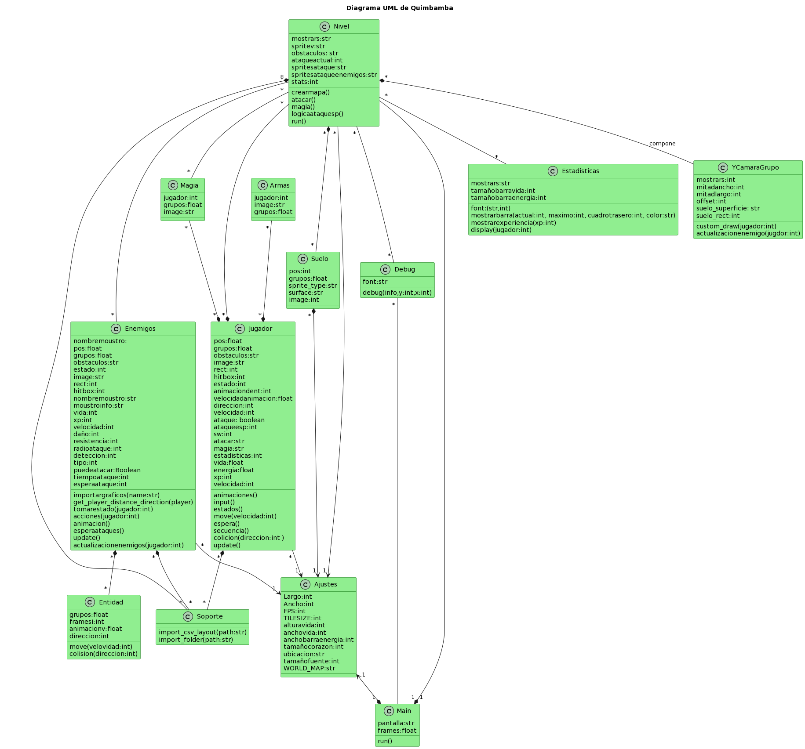

Descripción jerárquica
El programa se encuentra organizado por módulos de Python bajo el modelo POO. Por lo que agrupa una colección de objetos de la misma estructura para conformar una clase, siendo así cada objeto una instancia de su clase.
Diagrama de módulos (UML)
-
Imagen del UML

-
Codigo del UML
{kind=link}
@startuml Quimbamba
Title Diagrama UML de Quimbamba
class Ajustes #lightgreen;line:darkgreen{
Largo:int
Ancho:int
FPS:int
TILESIZE:int
alturavida:int
anchovida:int
anchobarraenergia:int
tamañocorazon:int
ubicacion:str
tamañofuente:int
WORLD_MAP:str
}
class Armas #lightgreen;line:darkgreen{
jugador:int
image:str
grupos:float
}
class Debug #lightgreen;line:darkgreen{
font:str
debug(info,y:int,x:int)
}
class Enemigos #lightgreen;line:darkgreen{
nombremoustro:
pos:float
grupos:float
obstaculos:str
estado:int
image:str
rect:int
hitbox:int
nombremoustro:str
moustroinfo:str
vida:int
xp:int
velocidad:int
daño:int
resistencia:int
radioataque:int
deteccion:int
tipo:int
puedeatacar:Boolean
tiempoataque:int
esperaataque:int
importargraficos(name:str)
get_player_distance_direction(player)
tomarestado(jugador:int)
acciones(jugador:int)
animacion()
esperaataques()
update()
actualizacionenemigos(jugador:int)
}
class Entidad #lightgreen;line:darkgreen{
grupos:float
framesi:int
animacionv:float
direccion:int
move(velovidad:int)
colision(direccion:int)
}
class Estadisticas #lightgreen;line:darkgreen{
mostrars:str
font:(str,int)
tamañobarravida:int
tamañobarraenergia:int
mostrarbarra(actual:int, maximo:int, cuadrotrasero:int, color:str)
mostrarexperiencia(xp:int)
display(jugador:int)
}
class Magia #lightgreen;line:darkgreen{
jugador:int
grupos:float
image:str
}
class Jugador #lightgreen;line:darkgreen{
pos:float
grupos:float
obstaculos:str
image:str
rect:int
hitbox:int
estado:int
animaciondent:int
velocidadanimacion:float
direccion:int
velocidad:int
ataque: boolean
ataqueesp:int
sw:int
atacar:str
magia:str
estadisticas:int
vida:float
energia:float
xp:int
velocidad:int
animaciones()
input()
estados()
move(velocidad:int)
espera()
secuencia()
colicion(direccion:int )
update()
}
class Main #lightgreen;line:darkgreen{
pantalla:str
frames:float
run()
}
class Nivel #lightgreen;line:darkgreen{
mostrars:str
spritev:str
obstaculos: str
ataqueactual:int
spritesataque:str
spritesataqueenemigos:str
stats:int
crearmapa()
atacar()
magia()
logicaataquesp()
run()
}
class YCamaraGrupo #lightgreen;line:darkgreen{
mostrars:int
mitadancho:int
mitadlargo:int
offset:int
suelo_superficie: str
suelo_rect:int
custom_draw(jugador:int)
actualizacionenemigo(jugdor:int)
}
class Soporte #lightgreen;line:darkgreen{
import_csv_layout(path:str)
import_folder(path:str)
}
class Suelo #lightgreen;line:darkgreen{
pos:int
grupos:float
sprite_type:str
surface:str
image:int
}
Ajustes " 1 " <--* " 1 " Main
Nivel--* " 1 "Main
Debug " * "-- " 1 "Main
Jugador " * " --> " 1 " Ajustes
Jugador " * " *-- " * "Soporte
Magia" * "--* " * "Jugador
Armas" * "--* " * "Jugador
Enemigos " * "--> " 1 "Ajustes
Enemigos " * " *-- " * " Soporte
Enemigos " * " *-- " * " Entidad
Nivel " * "--> " 1 "Ajustes
Nivel " * "--* " * "Jugador
Nivel " * "-- " * "Debug
Nivel " * "-- " * " Estadisticas
Nivel " * "-- " * "Magia
Nivel " * "-- " * "Enemigos
Nivel " * "*-- " * "Suelo
Nivel " * " *-- " * " Soporte
Nivel " * " *-- YCamaraGrupo: compone
Suelo " * " *--> " 1 " Ajustes
*[POO]: Programación Orientada a Objeto
*[UML]: Lenguaje Unificado de Modelado